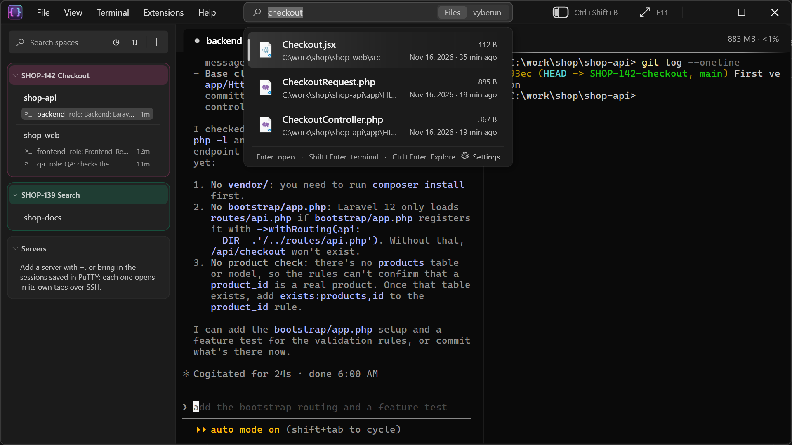

Manual › Getting started
The window
The parts of vyberun's window, and what each one is for.

SHOP-142 Checkout
shop-api
backend
shop-web
Servers
shop-staging
backendrole: Backendfrontend+ ⌄696 MB · <1%
PS C:\work\shop\shop-api> git status
On branch SHOP-142-checkout
The title bar
From left to right:
- The menus: File, View, Terminal, Extensions and Help. With Settings ▸ Title bar ▸ Show the full menu bar off, they open from the vyberun logo instead.
- The search box. Searches files and folders on your PC (Files) or everything in vyberun (vyberun): tabs, cards, servers and settings. Tab switches between the two. Ctrl+Shift+P opens it. See Find and search.
- The sidebar button (Ctrl+Shift+B) shows or hides the sidebar.
- Full screen (F11) shows just the terminal. Esc leaves it.
The sidebar
Your work, on the left:
- Search spaces, at the top, filters the sidebar as you type. Beside it: ◷ shows only the cards you worked in recently (the last hour, today, the last 7 days or a date range), ⇅ changes the order of the cards (your own order, recent first, or oldest first), and + makes a new space.
- Spaces group your cards, for example one space per ticket or client. Each space has a coloured header that sums up what runs in it, such as "1 waiting · 2 working", even when it's folded. New cards land in General.
- Cards are your projects and terminals. A card's tabs are listed under it, with each tab's role and when it was last used.
- Servers, at the bottom: your SSH servers, one card each.
Hold Ctrl and drag to move a card or a space. Drag the sidebar's edge to make it wider.
The tab row
Above the terminal: the tabs of the card you're in.
- Each tab shows its name, its role if it has one, and a dot for its state: working, waiting for you, or finished.
- + opens a new tab in the card's folder, in your default shell. The small arrow next to it picks another shell (Git Bash, PowerShell, Command Prompt or Ubuntu) and brings back detached tabs.
- Double-click a tab to rename it, and drag it to move it. Right-click it for its menu: give it a role (Set role…), move it to another card and more.
On the right of the tab row, the memory and CPU used by vyberun and everything in its tabs. Click it to open Terminal ▸ Activity….
The terminal
The rest of the window is the terminal, drawn by the same renderer as Windows Terminal. A tab can be split into panes, side by side or one above the other. See Sessions that survive for what happens to it when you close vyberun.